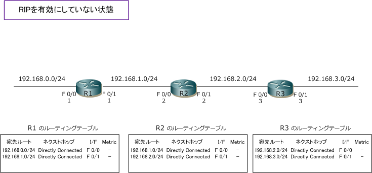
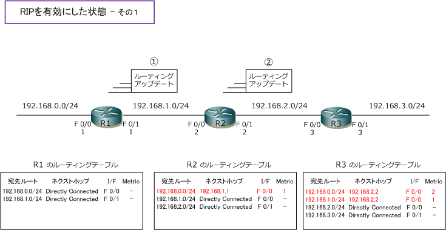
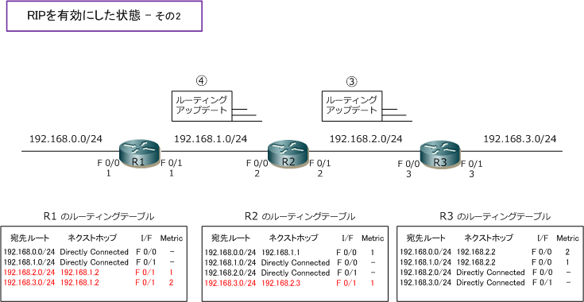
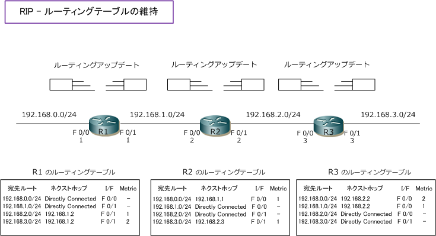
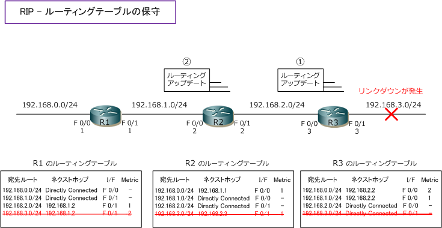

Distance Vector Routing Protocol
ディスタンスベクタ型ルーティングプロトコルの動作
ディスタンスベクタは、ディスタンス(距離)とベクタ(方向)により最適なルートを決定するアルゴリズム。 簡単にいえばホップ数で最適なルートを決定します。ルータ間では定期的にルーティングテーブル全体を 交換し合うことでリモートネットワークの経路情報を受信します。単純な動作であり収束が遅いのが特徴。 ディスタンスベクタ型ルーティングプロトコルにはRIPとIGRPがあります。IGRPは現在使用されてません。
その1 - ルーティングテーブルの形成
下図でディスタンスベクタ型のルーティングの動作を見ていきます。下図は全てのルータでRIPを有効に していない状態。全てのルータは自身のインターフェースのネットワークを経路情報として持っています。

下図は全てのルータでRIPを起動した状態。RIPを起動したルータは隣接ルータにルーティングアップデート を送信します。今回は理解しやすくするために、R1→R2→R3の順番にルーティングアップデートを送信して その後、R3→R2→R1の順番で送信する前提で解説します。実際には、各ルータはRIPが有効になった時点で 順番なしに両方のI/Fから一方的にルーティングアップデートを送信していき、ルーティングテーブルが形成。
?@ R1は自身のルーティングテーブルの経路情報にメトリック値を [ 1 ] 加算し、ルーティングアップデート を送信。それを受信したR2は、自身のルーティングテーブルには存在しない「192.168.0.0/24」の経路を 受信したメトリック値どおりに[ 1 ]としてルーティングテーブルに登録します。メトリックはホップ数のこと。
?A R2は自身のルーティングテーブルの経路情報にメトリック値を [ 1 ] 加算し、ルーティングアップデート を送信。[ 192.168.0.0/24 ] の経路情報はメトリック値が 1 となっており、1を加算した結果の [ 2 ] として R3に送信します。それを受信したR3は、ルーティングテーブルには存在しない [ 192.168.0.0/24 ] の経路を メトリック値 2 として、[ 192.168.1.0/24 ] の経路をメトリック値に 1 としてルーティングテーブルに登録。

?B R3→R2にルーティングアップデートを送信します。?@、?Aと考え方は同じです。結果は下図の通り。 ?C R2→R1にルーティングアップデートを送信します。?@、?Aと考え方は同じです。結果は下図の通り。

その2 - ルーティングテーブルの維持
各ルータのルーティングアップデートでルーティングテーブルが最終形として形成された後も、各ルータでは ネットワークの状態に変化がなくても、定期的にルーティングアップデートを送信します。この動作によって ルーティングテーブルの経路情報が常に最新であるのかどうかを確認できて、完全な状態が維持されます。

その3 - ルーティングテーブルの保守
ディスタンスベクタ型ルーティングプロトコルでは定期的なルーティングアップデート以外にもネットワーク の変化があればルーティングアップデートを送信します。これは、トリガードアップデートと呼ばれています。 ルータは上記のようなルーティングアップデートを受信すると自身のルーティングテーブル内容と比較します。
その際に、ある経路情報に対して現在よりもメトリック値の低い経路情報を受信した場合には、ルーティング テーブルを更新したり、受信した経路情報に既存の経路情報が存在しなくなった際は、ルーティングテーブル からその既存の経路情報を削除します。例えば、R3の 192.168.3.0/24 のインターフェースでリンクダウンが 発生すると先ず自身のルーティングテーブルから[ 192.168.3.0/24 ]の経路情報が消失します。続いてR3から のルーティングアップデート?@で[ 192.168.3.0/24 ]の経路情報が存在しなくなった事をR2は知ることにより 自身のルーティングテーブルから[ 192.168.3.0/24 ]の経路情報を削除します。?AによりR1も同じ動作をする。

このルーティングアップデートの流れで、全てのルータで [ 192.168.3.0/24 ] の経路情報は削除されます。